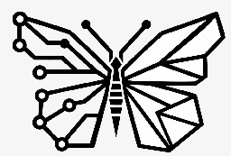

NYX RRHH
Sistema de escritorio para Linux. Se instala con un solo comando, sin permisos de administrador.
curl -fsSL https://TU-PROYECTO.vercel.app/install | bash
Desinstalar
curl -fsSL https://TU-PROYECTO.vercel.app/install | bash -s -- --uninstall
Ver el script · Descargar el binario
Funciona en Linux de 64 bits (Debian, Ubuntu, Fedora, Arch y derivadas).